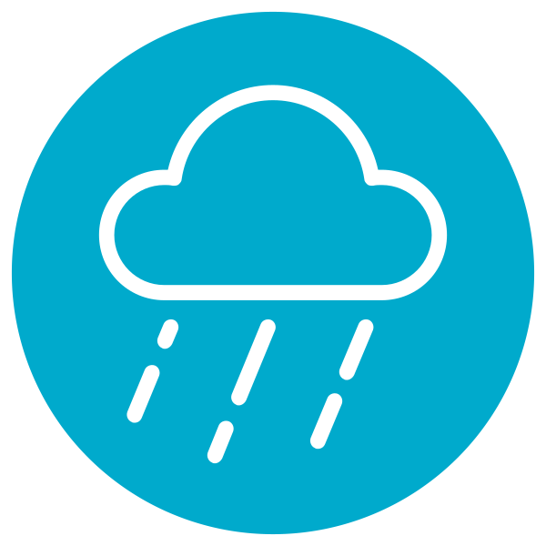

AmbientSounds
by Muges
Ambient sounds player inspired by Noizio, A Soft Murmur, etc...
The source code of this application is available on Github under MIT License.
I would like to thank Max Randall for the application's icon, and the authors of the original sound files which are listed below :